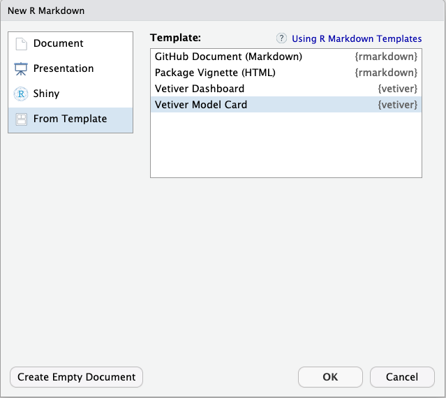

library(tidyverse)
library(tidymodels)
library(arrow)
path <- here::here("data", "inspections.parquet")
inspections <- read_parquet(path)
set.seed(123)
inspect_split <- initial_split(inspections, prop = 0.8)
inspect_train <- training(inspect_split)
inspect_test <- testing(inspect_split)
inspection_rec <-
recipe(results ~ facility_type + risk + total_violations + inspection_date,
data = inspect_train) |>
step_date(inspection_date, features = c("month", "year"), keep_original_cols = FALSE)
inspection_fit <-
workflow(inspection_rec, rand_forest(mode = "classification", trees = 1e3)) |>
fit(data = inspect_train)2 - Deploy your model
Deploy and maintain models with vetiver
Plan for this workshop
- Versioning
- Managing change in models ✅
- Deploying
- Putting models in REST APIs üéØ
- Monitoring
- Tracking model performance üëÄ
Fit a random forest üå≥üå¥üå≤üå≤üå¥üå≥üå¥üå≥üå≤
import pandas as pd
import numpy as np
from sklearn import preprocessing, ensemble, pipeline, compose, model_selection
inspections = pd.read_parquet('../data/inspections.parquet')
inspections['inspection_date'] = pd.to_datetime(inspections['inspection_date'])
inspections['month'] = inspections['inspection_date'].dt.month
inspections['year'] = inspections['inspection_date'].dt.year
categorical_features = ['facility_type', 'risk', 'month', 'year']
X, y = inspections.drop(columns=['aka_name', 'results','inspection_date']), inspections['results']
X_train, X_test, y_train, y_test = model_selection.train_test_split(
X, y,
stratify = y,
test_size = 0.2
)
oe = compose.make_column_transformer(
(preprocessing.OrdinalEncoder(
handle_unknown="use_encoded_value", unknown_value=-1),
categorical_features,),
remainder="passthrough",
).fit(X_train)
rf = ensemble.RandomForestClassifier().fit(oe.transform(X_train), y_train)
inspection_fit = pipeline.Pipeline([("ordinal_encoder", oe), ("random_forest", rf)])Create your vetiver model and version
R
Python
from vetiver import VetiverModel, vetiver_pin_write
from pins import board_connect
import os
from dotenv import load_dotenv
load_dotenv()
api_key = os.getenv("CO_API_KEY")
rsc_url = os.getenv("CO_RSC_URL")
v = VetiverModel(inspection_fit, "chicago-inspections-python", ptype_data = X_train)
board = board_connect(server_url = rsc_url, api_key = api_key, allow_pickle_read = True)
vetiver_pin_write(board, v)Make it easy to do the right thing
- Robust and human-friendly checking of new data
- Track and document software dependencies of models
- Model cards for transparent, responsible reporting
Make it easy to do the right thing
Your turn üè∫
Activity
Open the Model Card template, and spend a few minutes exploring how you might create a Model Card for this inspection model.
Discuss something you notice about the Model Card with your neighbor.
05:00
You can deploy your model as a…
REST API
What is a REST API?
An interface that can connect applications in a standard way
Create a vetiver REST API
R
Python
Your turn üè∫
Activity
Create a vetiver API for your model and run it locally.
Explore the visual documentation.
How many endpoints are there?
Discuss what you notice with your neighbor.
07:00
What does “deploy” mean?

What does “deploy” mean?

Where does vetiver work?
Posit’s pro products, like Connect
AWS SageMaker (R only, for now)
A public or private cloud, using Docker
Deploy to Posit Connect
R
Python
from rsconnect.api import RSConnectServer
connect_server = RSConnectServer(url = rsc_url, api_key = api_key)
board = pins.board_connect(server_url = url, api_key = api_key, allow_pickle_read = True)
vetiver.deploy_rsconnect(
connect_server = connect_server,
board = board,
pin_name = "user.name/chicago-inspections-python",
)Your turn üè∫
Activity
Deploy your model to our Posit Connect instance.
Give your API a vanity URL.
Set your API as accessible to “Anyone”, for convenience.
Compare the results to your local API. Is anything different?
07:00
You did it! ü•≥
How do you make a request of your new API?
url <- "https://colorado.posit.co/rsc/chicago-inspections-rstats/metadata"
r <- httr::GET(url)
metadata <- httr::content(r, as = "text", encoding = "UTF-8")
jsonlite::fromJSON(metadata)
#> $user
#> list()
#>
#> $version
#> [1] "78859"
#>
#> $url
#> [1] "https://colorado.posit.co/rsc/content/0e1cdefd-8762-46b4-a60e-33a8b3fa7964/_rev78859/"
#>
#> $required_pkgs
#> [1] "parsnip" "ranger" "recipes" "workflows"import requests
url = "https://colorado.posit.co/rsc/chicago-inspections-python/metadata"
print(requests.get(url).content)
#> b'{"user":{},"version":"78841","url":"https://colorado.posit.co/rsc/content/d08259c2-8fe0-4466-a474-0b9adbcf91dc/","required_pkgs":["scikit-learn"],"python_version":[3,9,4,"final",0]}'How do you make a request of your new API?
Create a vetiver endpoint
You can treat your model API much like it is a local model in memory!
library(vetiver)
url <- "https://colorado.posit.co/rsc/chicago-inspections-rstats/predict"
endpoint <- vetiver_endpoint(url)
predict(endpoint, slice_sample(inspect_test, n = 10))
#> # A tibble: 10 × 1
#> .pred_class
#> <chr>
#> 1 FAIL
#> 2 PASS
#> 3 PASS
#> 4 FAIL
#> 5 FAIL
#> 6 PASS
#> 7 FAIL
#> 8 FAIL
#> 9 PASS
#> 10 FAILfrom vetiver.server import predict, vetiver_endpoint
url = "https://colorado.posit.co/rsc/chicago-inspections-python/predict"
endpoint = vetiver_endpoint(url)
predict(endpoint = endpoint, data = X_test.head(10))
#> predict
#> 0 FAIL
#> 1 FAIL
#> 2 PASS
#> 3 FAIL
#> 4 PASS
#> 5 FAIL
#> 6 FAIL
#> 7 FAIL
#> 8 PASS
#> 9 PASSYour turn üè∫
Activity
Create a vetiver endpoint object for your API.
Predict with your endpoint for new data.
Optional: call another endpoint like /ping or /metadata.
10:00
Your turn üè∫
Activity
Create a vetiver endpoint object for your neighbor’s API.
Predict with your endpoint for new data.
You get extra credit if your neighbor’s model is in a different language than yours!
05:00
Create a vetiver endpoint
What if your model API requires authentication?
R
library(vetiver)
url <- "https://colorado.posit.co/rsc/chicago-inspections-rstats/predict"
endpoint <- vetiver_endpoint(url)
predict(endpoint, slice_sample(inspect_test, n = 10))Python
Create a vetiver endpoint
What if your model API requires authentication?
R
library(vetiver)
url <- "https://colorado.posit.co/rsc/chicago-inspections-rstats/predict"
endpoint <- vetiver_endpoint(url)
apiKey <- Sys.getenv("CONNECT_API_KEY")
predict(endpoint, slice_sample(inspect_test, n = 10),
httr::add_headers(Authorization = paste("Key", apiKey)))Python
Model input prototype
inputs ➡️ outputs
Model input prototype
Notice that our Python model has different inputs than our R model:
glimpse(inspect_train)
#> Rows: 5,573
#> Columns: 6
#> $ results <fct> FAIL, PASS, FAIL, FAIL, FAIL, PASS, PASS, PASS, PASS,…
#> $ inspection_date <date> 2020-05-28, 2020-06-11, 2020-04-09, 2019-02-04, 2021…
#> $ aka_name <chr> "GRAND SHELL", "DSD DELI", "BP GAS", "LA MICHOACANA I…
#> $ facility_type <fct> GROCERY STORE, GROCERY STORE, GROCERY STORE, RESTAURA…
#> $ risk <fct> RISK 3 (LOW), RISK 1 (HIGH), RISK 3 (LOW), RISK 1 (HI…
#> $ total_violations <dbl> 31, 0, 25, 42, 17, 4, 17, 0, 2, 80, 94, 0, 37, 86, 66…X_train
#> facility_type risk total_violations month year
#> 1078 RESTAURANT RISK 1 (HIGH) 11.0 6 2019
#> 224 RESTAURANT RISK 1 (HIGH) 73.0 9 2018
#> 5913 RESTAURANT RISK 1 (HIGH) 19.0 9 2022
#> 6294 RESTAURANT RISK 2 (MEDIUM) 1.0 10 2022
#> 6825 RESTAURANT RISK 1 (HIGH) 25.0 12 2022
#> ... ... ... ... ... ...
#> 4407 GROCERY STORE RISK 1 (HIGH) 11.0 1 2022
#> 4284 GROCERY STORE RISK 2 (MEDIUM) 31.0 12 2021
#> 6935 RESTAURANT RISK 1 (HIGH) 76.0 12 2022
#> 6949 RESTAURANT RISK 2 (MEDIUM) 30.0 12 2022
#> 2818 GROCERY STORE RISK 2 (MEDIUM) 39.0 9 2020
#>
#> [5573 rows x 5 columns]Your turn üè∫
Activity
Call the prototype endpoints for both the Python and R model.
How do they compare?
05:00
Model input prototype
url <- "https://colorado.posit.co/rsc/chicago-inspections-rstats/prototype"
r <- httr::GET(url)
prototype <- httr::content(r, as = "text", encoding = "UTF-8")
jsonlite::fromJSON(prototype)
#> $facility_type
#> $facility_type$type
#> [1] "factor"
#>
#> $facility_type$example
#> NULL
#>
#> $facility_type$details
#> $facility_type$details$levels
#> [1] "BAKERY" "GROCERY STORE" "RESTAURANT"
#>
#>
#>
#> $risk
#> $risk$type
#> [1] "factor"
#>
#> $risk$example
#> NULL
#>
#> $risk$details
#> $risk$details$levels
#> [1] "RISK 1 (HIGH)" "RISK 2 (MEDIUM)" "RISK 3 (LOW)"
#>
#>
#>
#> $total_violations
#> $total_violations$type
#> [1] "numeric"
#>
#> $total_violations$example
#> NULL
#>
#> $total_violations$details
#> list()
#>
#>
#> $inspection_date
#> $inspection_date$type
#> [1] "Date"
#>
#> $inspection_date$example
#> NULL
#>
#> $inspection_date$details
#> list()Model input prototype
- In Python, you supply the model’s input prototype via
prototype_data - In R, the model input prototype is found automatically in most cases, but you can override this default via
save_prototype - In both cases, it is ultimately up to you to decide what your API’s inputs should be!
- The vetiver framework has sensible defaults but is extensible for more complex use cases
Your turn üè∫
Activity
Let’s say you need to customize your model API’s inputs for a more complex use case.
Make a new vetiver model object and change the input data prototype.
Run an API locally for your new vetiver model object and explore the visual documentation. (Note that making predictions will not work now, since we haven’t updated the API behavior to match these inputs.)
Discuss a possible situation you might use this with your neighbor.
07:00